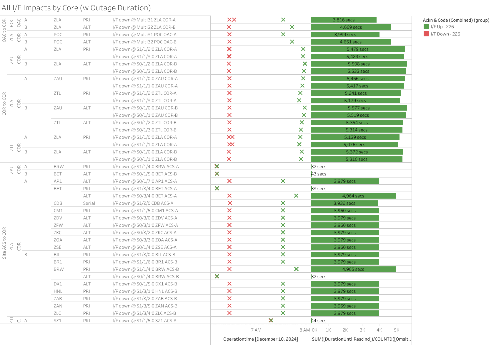
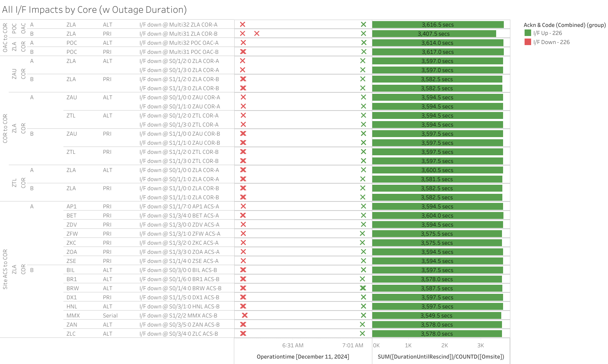
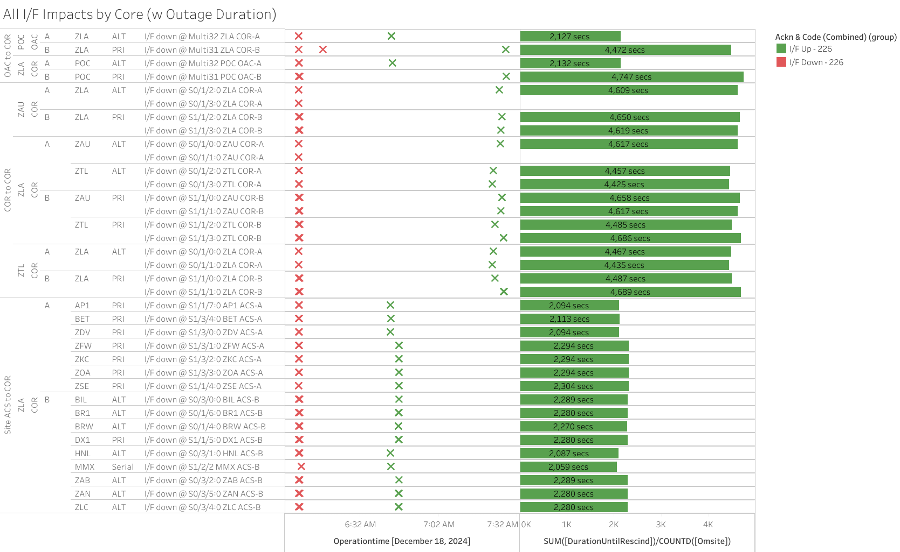

Weekly Highlights 20241211-20241218
SSM-WAAS-064 - DFO2-R1 GUS Receiver Upgrade
- 12/10 16:50 - SSM-WAAS-064 - BR2 to Maintenance for Upgrade; devices installed and configured and restored in Maintenance at 12/11 02:51; ready for RF Tuning...
- 12/11 23:43 - SSM-WAAS-064 - GUS Switchover - G30 - AP1 to Backup / BR2 to Primary to complete the RF Tuning and finish upgrade
- 12/17 16:57 - SSM-WAAS-064 - AP1 GUS to Maintenance for Upgrade to W7.425L; hanging in Startup at 12/18 02:02...
- 12/18 19:46 - SSM-WAAS-064 - AP1 GUS restored to Maintenance Mode for RF Tuning Procedure...
- 12/19 00:46 - SSM-WAAS-064 - GUS Switchover - G30 - BR2 to Backup / AP1 to Primary to complete RF Tunining; AP1 upgrade complete
| Task(s) | DATES | EXPECTED DURATION |
|---|---|---|
| Cutover O&Ms – W7.412L | 12/03 – 12/03 | 1 day |
| Cutover BR1 – W7.425L | 12/03 – 12/06 | 3 days |
| Cutover BR2 – W7.425L | 12/10 – 12/12 | 3 days |
| Cutover AP1 – W7.425L | 12/17 – 12/19 | 3 days |
| New Year --- 2025 | ||
| Cutover CM1 – W7.425L | 1/14 – 1/16 | 3 days |
| Cutover DX1 – W7.425L | 1/28 – 1/30 | 3 days |
| Cutover SZ1 – W7.425L | 2/04 – 2/06 | 3 days |
| Cutover O&Ms – W7.425 | 2/07 – 2/07 | 1 day |
| 2 Week Post Cutover Monitoring Period | 2/07 – 2/21 | 14 days |
- 12/2 08:00 - GUS Switchover - S15 - CM1 to Primary / BR1 to Backup in preparation for SSM-WAAS-064 Cutover start
- 12/3 16:04 - SSM-WAAS-064 - POC O&M to Maintenance for Upgrade to W7.412L; restored to Normal at 12/3 16:51
- 12/3 16:54 - SSM-WAAS-064 - NOC O&M to Maintenance for Upgrade to W7.412L; restored to Normal at 12/3 17:34
- 12/3 17:42 - SSM-WAAS-064 - BR1 GUS to Maintenance for Upgrade to W7.420L...
- 12/5 00:17 - SSM-WAAS-064 - BR1 returns to Maintenance and TLT Verification performed; RF Tuning still to be performed...
- 12/5 18:47 - SSM-WAAS-064 - BR1 returns to Maintenance for TLT Verification and final RF Tuning steps
- 12/6 01:45 -
SSM-WAAS-064
-
GUS Switchover -
S15 - BR1
verified to Primary mode
- 12/6 05:45 - GUS Switchover - S15 - BR1 Faulted from Primary with SE 44 L1 GEO Downlink Msg Check Fault...
- 12/6 06:47 - BR1 Faulted during Verification with SE 45 L5 GEO Downlink Msg Check Fault due to exceeding time in Verification mode
- 12/6 07:29 - BR1 restored to Backup; ~44 seconds after entering Backup mode, received SE 50 L5@L2 Gen Lpbck Check Fault which has not rescinded...
- 12/6 18:11 - GUS
Switchover -
S15
- CM1 to Backup / BR1 to
Primary to test and
troubleshoot downlink
- 12/6 19:01 - GUS Switchover - S15 - BR1 to Backup / CM1 to Primary; after mode change to Primary, BR1 began alerting with SE 47 L1@L2 Gen Lpbck Msg Check Fault and received SE 46 L1 Test Trans Msg Check Fault
- 12/6 19:20 - BR1 GUS Faulted with Receiver SEs
- 12/6 19:58 -
Verified BR1
GUS to
Backup then
immediately
received SE
50 L5@L2 Gen
Lpbck Check
Fault;
planning to
replace
GUS-D
Receiver...
- CR:
What prompted the receiver swap was parity errors on the L1 and L5 geo messages
- CR:
- 12/6 21:25 - BR1 GUS Verified to Backup after replacing GUS-D Receiver
- 12/6 21:51 -
GUS
Switchover
-
S15
- CM1 to
Backup /
BR1 to
Primary;
received
non-critical
SEs 46 L1
Test Trans
Msg Check
Fault and 50
L5_L2 Gen
Lpbck Check
Fault
- CR:
SEs are due to the false doppler for the internal loopback signals
- CR:
12/10-11 - Major Comm Events MR-187726 / MR-187728
- 12/10 06:26 - Major comm impact affecting COR-COR
circuits on both rings at ZLA for
MR-187726 ZLA/ZTL/ZAU--Mulitple lines OTS. L3Harris will be onsite to transition ALTERNATE circuits from the ONS C15310 to the Fujitsu FW410-- ref LIR 902203724; all lines cleared by 12/10 07:58 (~5476 seconds)

- 12/11 06:05 - Major comm event affecting both
rings at ZLA for
MR-187728 ZLA/ZAU/ZTL--Multiple Lines OTS. L3Harris will be onsite to transition PRIMARY circuits from the ONS C15310 to the Fujitsu FW4100-- ref LIR 902203024- Concurrent with the circuit work at
12/11 06:05, we received No
Data Reported SEs from ZTL and
ZLA C&V. ~10
seconds later we received
MT0s and TTA exceeded SEs
which rescinded after a few
seconds:
- ZDC/ZTL reported TTA exceeded for 133
- ZLA reported TTA exceeded for 135
- Concurrent with the circuit work at
12/11 06:05, we received No
Data Reported SEs from ZTL and
ZLA C&V. ~10
seconds later we received
MT0s and TTA exceeded SEs
which rescinded after a few
seconds:

12/11 - NOC OM Power Panel Work / GEO 135 SIS Outage
- 12/11 07:37 - NOC O&M to Maintenance and
Shutdown for power panel work -- ref LIR
905010024; restored to Normal
at 12/11 08:52
- 12/11 07:48 - AP1 started showing No Data Reported (likely similar to previous issues with BR1 during POC O&M outages) -- ref LIR 909362524
- 12/11 08:00 - NOCC O&M Access Router comm down, did not recover after restoration of NOC O&M; NOC O&M Access Router B SNMP Cold Start at 12/11 19:12 but Ring 2 WAAS system comm not restored...
- 12/11 08:26 - Lost SIS - AP1 GUS was Control Powered OFF -- ref LIR 909362524; restored to Primary at 12/11 11:11
- 12/11 08:27 - All C&Vs alerted with SE 742 No GEO Measurements Rcvd 135 and SE 753 <4 Sats monitored by 135; SEs cleared at 12/11 11:11 indicating SIS restored; URDREis dropped to usable at 12/11 ~13:27
- 12/12 19:59 - NOC OAC-B rebooted to troubleshoot comms to ZDC COR-B -- lines cleared; Resync command at 12/12 20:43
12/11 - Power Outage to ZAB WRE-C
- 12/11 07:38 - ZAB WRE-C temporarily lost power during a cancelled MR-187726, returned to Maintenance Mode at 12/11 07:49; restored to Normal at 12/11 11:54
12/11 - ZME WRE-C Freq Std Replaced
- 12/3 01:20 - ZME WRE-C Faulted with SEs 52, 53, and 59; Control Powered and restored to Normal at 12/3 02:11
- 12/3 13:15 - ZME WRE-C Faulted with SEs 53 and 59; Freq Std alarmed with F3 - Ion Filament out of tolerance; Control Powered and restored to Normal at 16:02
- 12/4 21:11 - ZME WRE-C Faulted with SEs 53 and 59; recommended replace Freq Std...
- 12/11 14:48 - ZME returned to Maintenance after Freq Std replacement; restored to Normal at 12/11 17:06
12/13 - ZJX WRE-B Power Panel Work
- 12/13 06:58 - ZJX WRE-B Control Powered OFF for Power Panel work -- ref LIR 910605424; restored to Normal at 12/13 10:10
12/14 - ZAU WRE-A Power Panel Work
- 12/14 03:42 - ZAU WRE-A Control Powered OFF for Power Panel work -- ref LIR 909584124; restored to Normal at 12/14 06:13
12/17 - YYR Ring 2 Repaired
- 12/12 12:48 - YYR Ring 2 comms down hard; line cleared at 12/12 13:14 (~1569 seconds)
- 12/12 14:43 - YYR Ring 2 comms down hard...
- 12/17 19:01 - YYR WRE-C to Maintenance to fix bad
cables for Ring 2 -- ref LCM
942554832; PCU-C went down during
work; restored to Normal at 12/17
20:18
- 12/17 20:08 - YYR Ring 2 comms cleared (~5d 5h down)
12/18 - Major Comm Event (MR-187728A)
12/18 06:08 - Major comm impact across WAAS for
MR-187728A - L3Harris will be onsite to transition PRIMARY circuits from the ONS C15310 to the Fujitsu FW4100
-- ref LIR
909677024
- COR-ACS comms cleared at 12/18 06:46 (~2284 seconds)
- Remaining comms cleared at 12/18 07:27 (~4747 seconds)

- 12/18 10:20 - ZAU-ZLA comms flapping; last events cleared at 12/18 10:29 (~90 seconds total)
- 12/18 11:47 - ZLA-ZAU COR-COR ALT comms down hard; lines cleared at 12/18 11:54 (~408 seconds)
12/18 - MMD WRE-A Freq Std Minor Alarm
- 12/18 07:18 - MMD WRE-A flapping with SE 30 Minor Alarms for Freq Std; last event cleared at 12/18 08:10
- 12/18 11:04 - MMD WRE-A flapping with SE 30 Minor Alarms for Freq Std; last event cleared at 12/18 12:07
- 12/18 19:08 - MMD WRE-A flapping with SE 30 Minor Alarms for Freq Std...
Various Comm Impacts
* Only captures major / long-term comm outages
Mexico Comms
- 12/11 08:48 - MMX Ring 2 comms down hard...
- 12/11 12:16 - MTP Ring 1 comms down hard; line cleared at 12/11 15:26 (~3h 9m)
- 12/11 18:09 - MTP Ring 1 comms flapping; last events cleared 12/13 03:15 (~115972 seconds total)
- 12/11 21:55 - MMX Ring 2 down hard; line cleared at 12/11 21:57 (~122 seconds)
- 12/11 21:55 - MSD Ring 2 looped; loop cleared at 12/11 22:00 (~288 seconds)
- 12/16 12:26 - MTP Ring 1 comms down hard; line cleared at 12/16 15:56 (~3h 29m)
- 12/17 23:49 - MSD Ring 1 comms down hard; line cleared at 12/18 05:16 (~5h 26m)
- 12/18 14:56 - MTP Ring 1 comms down hard; line cleared at 12/18 18:36 (~3h 39m)
OTZ Comms
- 12/11 02:48 - OTZ Ring 2 ALT comms flapping; last event cleared at 12/11 09:10 (~1173 seconds total)
- 12/11 19:47 - OTZ Ring 1 PRI comms down hard; line cleared at 12/11 19:50 (~173 seconds)
- 12/14 04:16 - Reset OTZ ACS-A Router
- 12/17 03:48 - OTZ Ring 1 ALT / Ring 2 ALT comms flapping; last events cleared at 12/17 05:50 (~2660 seconds)
- 12/18 03:08 - OTZ Ring 1 ALT comms flapping; last event cleared at 12/18 10:33 (~11776 seconds total)
- 12/18 03:44 - OTZ Ring 2 ALT comms flapping; last event cleared at 12/18 07:27 (~1587 seconds total)
BRW Comms
- 12/12 07:04 - BRW Ring 1 ALT / Ring 2 PRI comms down hard; lines cleared at 12/13 03:50 (~74747 seconds)
- 12/13 08:41 - BRW Ring 1 ALT / Ring 2 PRI comms flapping; last events cleared at 12/13 12:14 (~1070 seconds total)
- 12/14 09:00 - BRW Ring 1 ALT / Ring 2 PRI comms flapping; last events cleared at 12/14 12:08 (~584 seconds total)
- 12/15 08:48 - BRW Ring 1 ALT / Ring 2 PRI comms flapping; last events cleared at 12/15 12:49 (~1670 seconds total)
- 12/16 06:06 - BRW Ring 1 ALT / Ring 2 PRI comms flapping; last events cleared at 12/16 14:01 (~3877 seconds total)
- 12/18 11:35 - BRW Ring 1 ALT / Ring 2 PRI comms flapping; last events cleared at 12/18 11:37 (~60 seconds total)
Other Sites
- 12/12 07:39 - ZLA-ZTL Ring 1 PRI COR-COR comms (ZLA S1/1/3) flapping; last event cleared at 12/12 08:06 (~1269 seconds)
- 12/12 08:36 - ZLA-ZTL Ring 1 PRI COR-COR comms (ZLA S1/1/2) flapping (some loop events and other comms affected); last event cleared at 12/12 09:02 (~1956 seconds)
- 12/12 08:40 - CDB Ring 1 comms flapping; last event cleared at 12/12 08:59 (~1056 seconds total)
- 12/12 11:30 - CDB Ring 1 comms flapping; last event cleared at 12/12 12:02 (~1617 seconds total)
- 12/12 12:17 - ZSU Ring 1 PRI / Ring 2 ALT comms flapping; last events cleared at 12/12 12:20 (~110 seconds)
- 12/12 22:19 - ZME Ring 1 ALT / Ring 2 PRI comms flapping; last events cleared at 12/13 08:18 (~270 seconds total)
- 12/13 12:17 - ZSU Ring 1 PRI / Ring 2 ALT comms flapping; last events cleared at 12/13 12:20 (~125 seconds total)
OTZ Ring 2 PRI / ALT
- 9/18 23:57 - OTZ Ring 1 ALT comms
connected after circuit validation
- Currently the wrong circuit (*508) is being used for OTZ Ring 2 ALT and *509 is connected on OTZ Ring 2 PRI
- FTI is troubleshooting the *509 circuit -- ref LIR 69611621
- Intial alarm light on DNX1U has cleared as of 10/1; further troubleshooting from FTI has not resolved issue...
- FTI has tested and re-terminated at ZLA. FTI needs a technician dispatched to OTZ to reset some equipment. Date has not been determined.
List of current offline WREs
List of current offline WREs -- ref WAAS Status Monitor
All Depot shipments to Mexico are halted until the customs process can be finalized
- MTP WRE-B - 11/18/24-... - Receiver inits failing...
- MMX WRE-A - 10/13/24-... - Freq Std failed -- ref LAD 879853824
- MMX WRE-C - 5/15-... - Processor failed and could not be restored
- MPR WRE-B - 5/3-... - Inits failing -- looks like a bad freq std; due to shipping issues, there is no spare Freq Std and no ETA to recover WRE-B...
5/11/23-11/20/24 - MX Ring 2 Satcom Upgrade
- 5/11/23 17:01 - MX Ring 2 SatCom upgrade begins; MX Ring 2 OFFLINE until upgrade troubleshooting is complete
All sites are currently connected through Tijuana with new cables; but still large UDP data packets (WAAS Multicast) being dropped on Ring 2 -- no further actions to take at Tijuana
-
MMX / MMD are only sites with Ring 2 comm
-
MTP / MMD / MSD had comm issues to Tijuana prior to satcom failure...
-
WAAS Second Level assessing situation before further troubleshooting...

Major Events


Core I/F Status

Comm Events

Mexico Comm Status